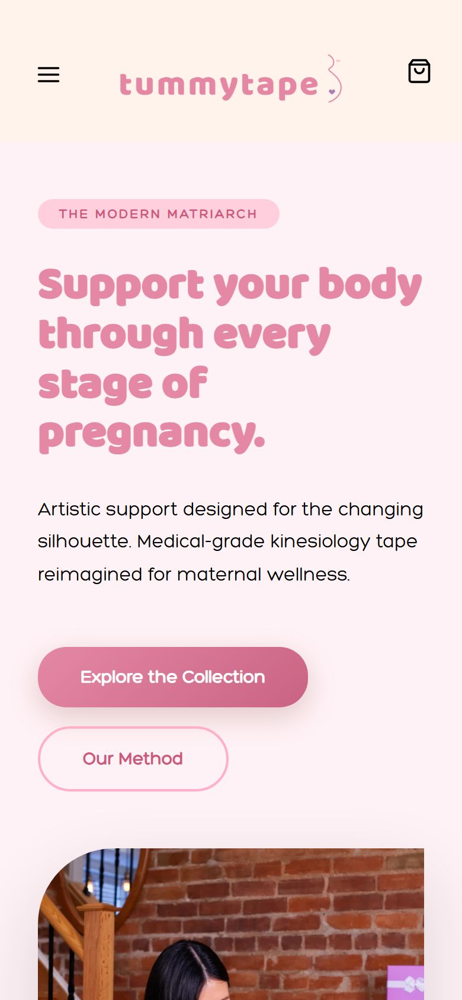
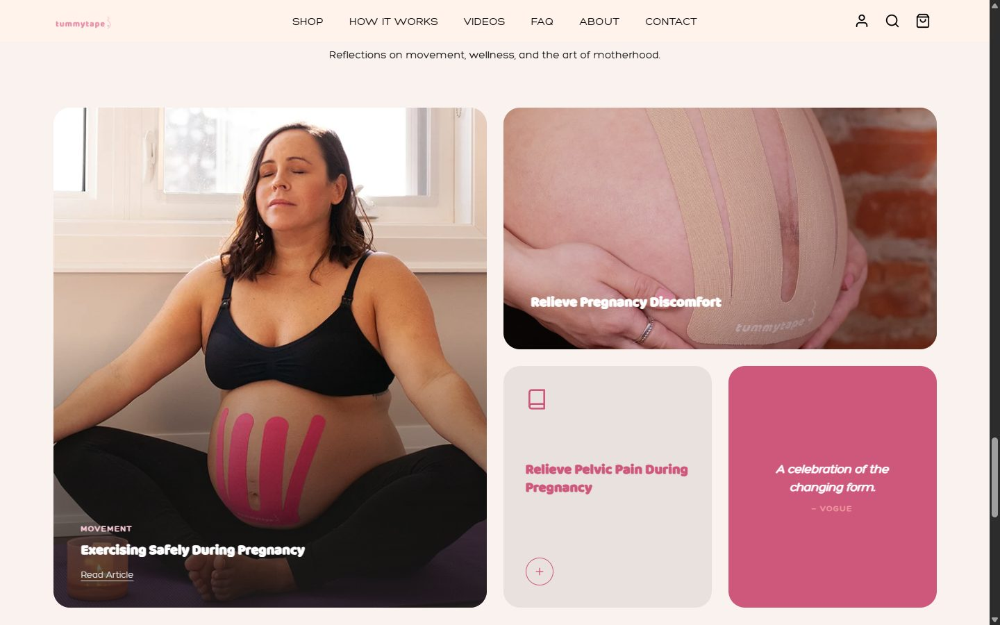
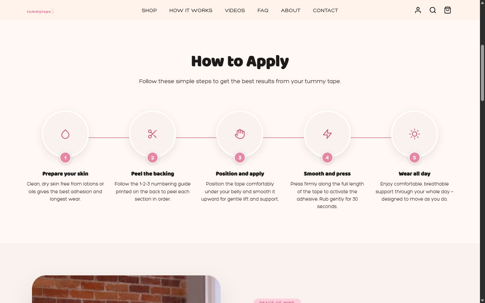
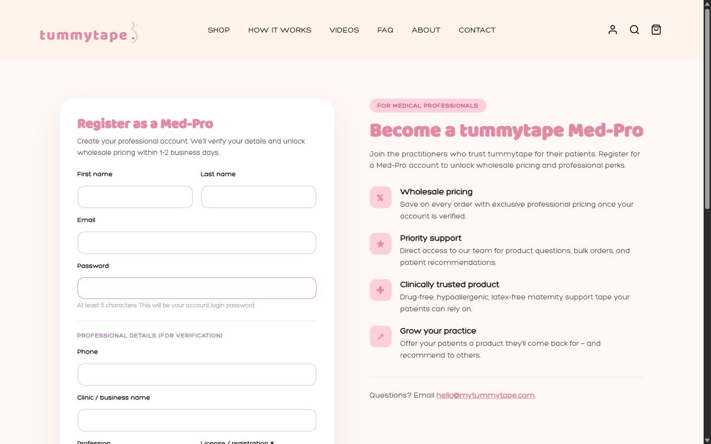

A calmer, clearer store for pregnancy support
Tummy Tape makes kinesiology-style support tape for pregnancy. The product works best when it's applied correctly, so the store has two jobs: help an expecting parent decide quickly, then show them exactly how to use it. We redesigned the store around both, and added a path for the medical professionals who recommend the tape to their patients.
- Client
- Tummy Tape
- Industry
- Maternity health
- Platform
- Shopify · premium theme
- Timeline
- Mar–Sep 2026
- Status
- Live


A homepage that answers questions before they're asked
We rebuilt the homepage as a sequence of short, reassuring answers: what the tape does, which product to start with, how it works and what other parents say. Each piece is its own section, so the team can reorder or swap them as campaigns change.
- Hero, essentials grid and "the method" explainer
- A bento-style journal grid for articles and tips
- Testimonials, social proof and a logo strip
- Soft glass-style labels and staggered layouts that match the brand's calm tone

Step-by-step guides, with video
Applying the tape correctly matters, so we built a dedicated "How it works" page and separate application guides, each designed to be followed on a phone, one step at a time.
- A five-step guide with a click-to-play video, so the page stays fast
- Separate application pages with tips and numbered steps
- Link cards that send readers to the right product afterwards
- A newsletter sign-up placed where readers finish the guide

A front door for medical professionals
Health professionals who recommend Tummy Tape to their patients needed their own way in. We built a registration flow just for them, and tightened up the product pages everyone sees.
- A professional registration form that submits the details and creates the customer account in the background
- Product pages with clear benefits, accordions for details and featured video
- The whole store available in seven languages
- Every change recorded in a running customization log for the client

Easier to buy, easier to use
Customers get a straight path from question to product to a guide they can follow, and professionals now have their own way in.